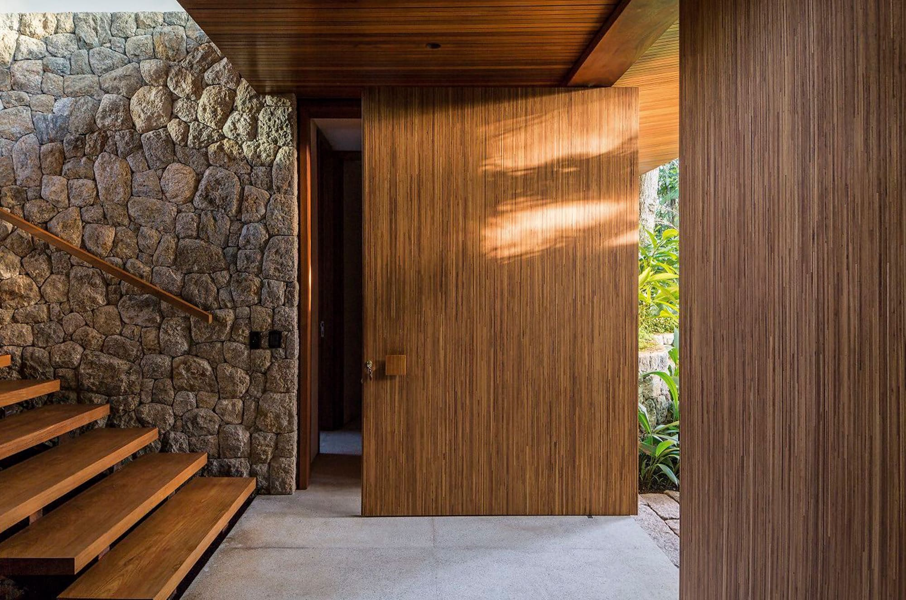

Entradas Majestosas
Portas
A primeira impressão é a que permanece. Nossas portas pivotantes e de correr em madeira de demolição ou nobres são o ápice do design contemporâneo.
O umbral da sofisticação absoluta.
